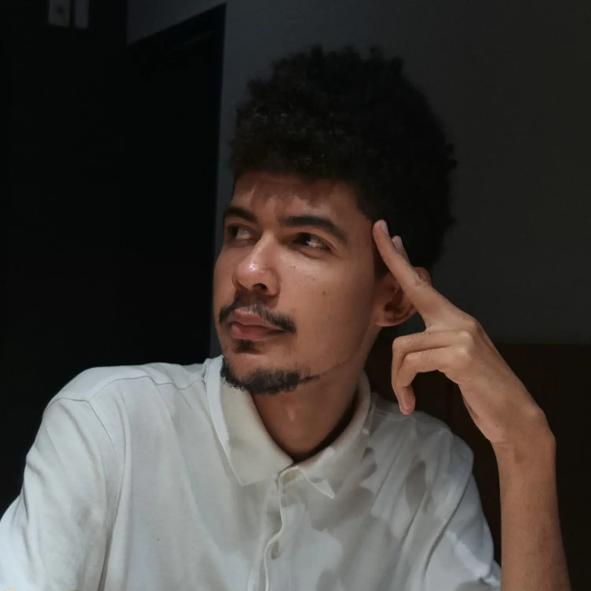
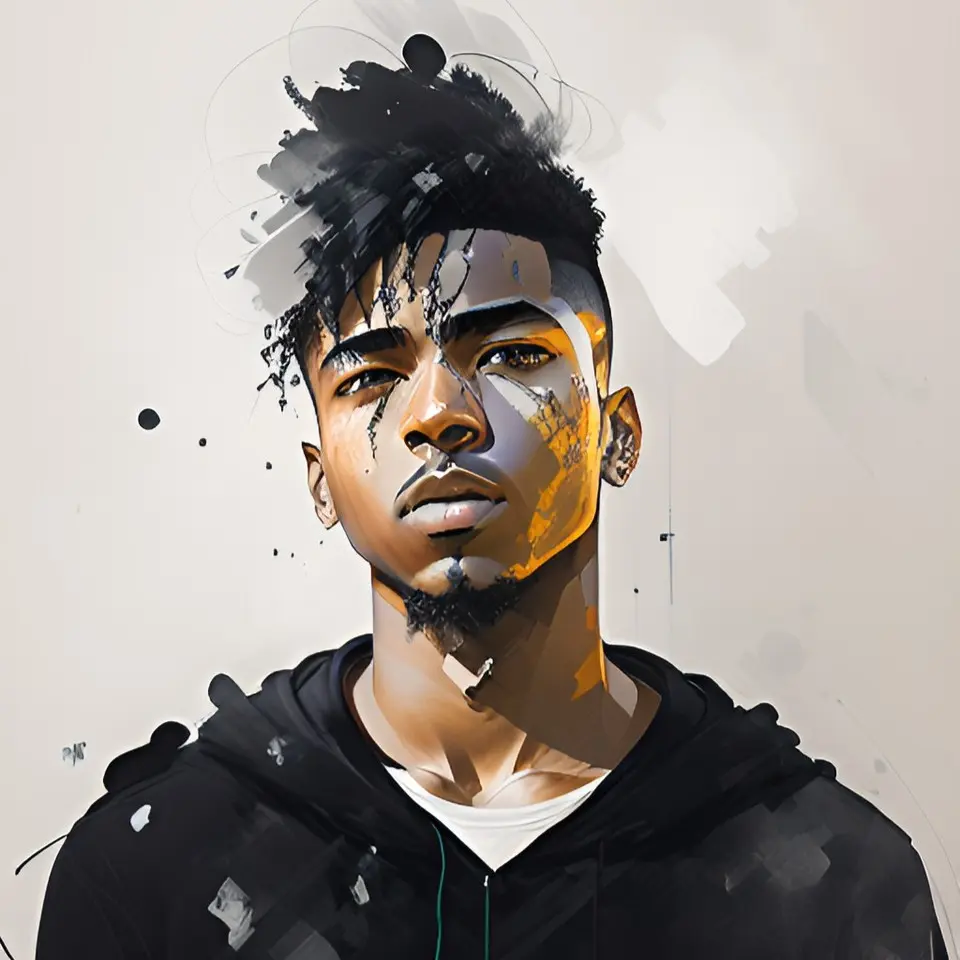

olá! eu sou rodrigo ツ
> full-stack web developer 💻
> entusiasta em desempenho e usabilidade ⚡
> role player & contador de histórias 🧙🏽♂️
> full-stack web developer 💻
> entusiasta em desempenho e usabilidade ⚡
> role player & contador de histórias 🧙🏽♂️
Rodrigo Oliveira Santos. 25 anos. Graduando em Sistemas de Informação pela Universidade Federal de Sergipe.
Sou fascinado por computadores desde criança. Descobri a programação enquanto pesquisava na internet como eram criados os videogames, e nessa aventura nasceu meu primeiro Hello World em Pascal.
Hoje atuo como desenvolvedor web full-stack, onde meu maior foco é em desempenho, usabilidade e responsividade. Acredito que um sistema não deve apenas funcionar, mas também ser eficiente e intuitivo.
Sou criativo. Gosto de buscar novas formas mais eficientes de resolver problemas. Me sinto mais a vontade desenvolvendo algo que nunca fiz antes, do que repetindo tarefas antigas.
Tenho facilidade em aprender coisas novas quando preciso e conviver bem com pessoas que pensam diferente.

Laravel

Node.js

Git

Bootstrap

Tailwindcss